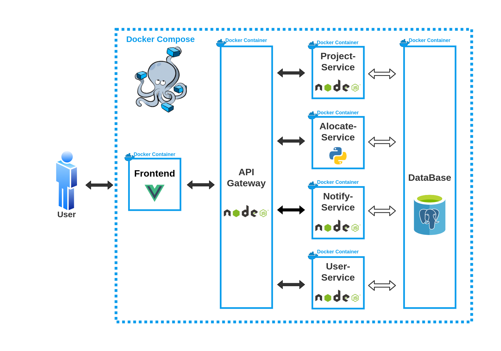
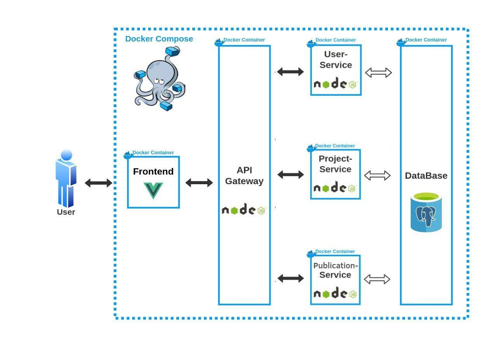

Introdução
O documento de arquitetura possui por objetivo contextualizar a arquitetura de software aplicada no desenvolvimento do PUMA.
Objetivos
Possibilitar uma visão geral da arquitetura da plataforma e evidenciar seus aspectos. Sendo assim, esse documento busca transparecer as decisões arquiteturais que foram tomadas em relação ao PUMA.
Importante ressaltar que o projeto foi anteriormente arquitetado pelos membros da disciplina. A versão atual da arquitetura descrita nesse documento é uma contextualização e aperfeiçoamento da ideia trabalhada, considerando as novas especificações realizadas durante o processo da Lean Inception.
Representação da Arquitetura
Diagrama de Relações
Versão Base

Versão Revisada
Versão considerando apenas o escopo do semestre 
Representação dos Serviços
Front End
O front end é a interface onde o usuário irá se comunicar com o sistema. É composto por uma tela de cadastro e outra de registro, o que leva à página inicial do PUMA, a página de perfil de usuário. Nesse ponto, há a possibilidade de seguir diversos caminhos dentro do sistema, como as páginas de cadastro de proposta, avaliação de proposta e repositório de projetos.
API Gateway
O API Gateway é utilizado como um mutex para a comunicação entre a interface de usuário e os outros micro-serviços. Dessa forma, ao receber uma requisição o gateway atua como uma ponte entre o front end e o serviço desejado.
Project-Service
O serviço "Project-Service" foi planejado para lidar com todas as tarefas envolvendo projetos do sistema. Assim, o envio de propostas, o encaminhamento para o professor / disciplina adequada e as possíveis alterações nos projetos seriam todas tarefas para o Project-Service resolver.
User-Service
Desenvolvido para manter o controle de usuários, desde sua criação até o controle das rotas de acesso permitidas, criação de times dentre outros.
Tecnologias
Vue.js
É um framework Javascript open-source para criação de aplicações web, ele é muito utilizado para criação de aplicações SPA (Single Page Applications) e também pra vários outros tipos de interface, com foco na interação e experiência do usuário.
Node.js
É uma plataforma de aplicação para Javascript, que tem como principal objetivo facilitar a construção de softwares escaláveis. Ele geralmente é usado ao lado do servidor e é orientado para o estilo de programação voltada a evento. Isso faz com que ele seja leve, eficiente e uma boa alternativa para arquitetura de microsserviços.
PostgreSQL
O PostgreSQL é um gerenciador de banco de dados relacionais que proporciona forte confiabilidade, robustez de recursos e desempenho.
Docker
Docker é uma plataforma, open-source para criação, execução e deploy de contêineres. Esses contêineres são pacotes da aplicação contendo suas dependências, bibliotecas e arquivos de configuração.
Docker Compose
Docker Compose é um orquestrador de contêineres Docker. Com ele é possível gerenciar vários contêineres de uma única vez, definindo o comportamento de cada um deles.
Banco de Dados
Diagrama Entidade-Relacionamento

Diagrama Lógico de Dados

Legenda dos ENUMS
Status da Tabela PROJECT
| ENUM | Nome | Descrição |
|---|---|---|
| SB | Proposta Submetida (Pré-alocada) | Utilizado quando a proposta é submetida. |
| RL | Proposta Realocada | Utilizado quando professor/administrador realoca a proposta para outra disciplina. |
| AL | Proposta Aguardando Alocação | Utilizado quando a proposta não possui disciplina alocada (a disciplina adequada para a proposta não é conhecida pelo professor responsável). |
| AC | Proposta Aceita (Aguardando Semestre Disponível) | Utilizado quando a proposta for aceita por um professor/administrador, porém ainda não incluída a nenhum semestre. |
| RC | Proposta Recusada | Utilizado quando a proposta for recusada por um professor/administrador. |
| IC | Projeto em Iniciação (Formação de Times) | Utilizado quando a proposta for incluída para o semestre de alguma disciplina. |
| EX | Projeto em Execução | Utilizado quando o(s) time(s) designado(s) inicia(m) o desenvolvimento do projeto. |
| EC | Projeto Encerrado | Utilizado quando o desenvolvimento do proejto for concluído. |
Status da Tabela SEMESTER
| ENUM | Nome | Descrição |
|---|---|---|
| AD | Em Andamento | Para os semestres eu estão em andamento. |
| CD | Concluído | Para os semestres concluídos. |
Type da Tabela POST
| ENUM | Nome | Descrição |
|---|---|---|
| ED | Edital | Para publicação de editais. |
| NT | Notícia | Para publicação de notícias. |
| DP | Divulgação de Projetos | Para divulgar os melhores projetos. |
Histórico de Revisão
| Data | Versão | Modificação | Autor |
|---|---|---|---|
| 16/03/2022 | 1.0 | Criação do documento e tópicos iniciais | Bruno Duarte |
| 16/03/2022 | 1.1 | Adição Tópico Banco de dados | Bruno Duarte e Gustavo Nogueira |
| 16/03/2022 | 1.2 | Corrigindo referenciamento Imagens | Bruno Duarte e Gustavo Nogueira |
| 25/03/2022 | 1.3 | Atulizando tópico banco de dados | Bruno Duarte e Gustavo Nogueira |
| 10/04/2022 | 1.4 | Atulizando tópico banco de dados | Bruno Duarte e Gustavo Nogueira |
| 12/04/2022 | 1.5 | Atulizando tópico banco de dados | Bruno Duarte e Gustavo Nogueira |
| 14/04/2022 | 1.6 | Atulizando tópico banco de dados | Bruno Duarte e Gustavo Nogueira |